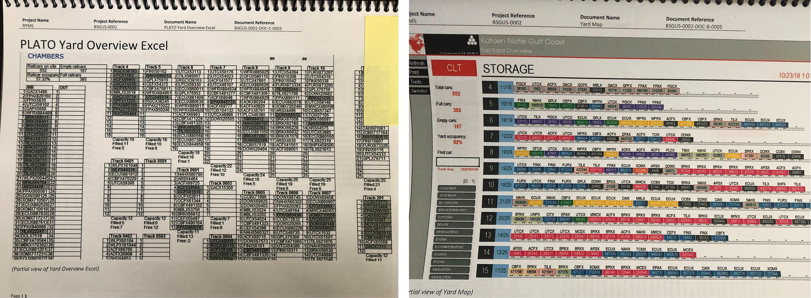
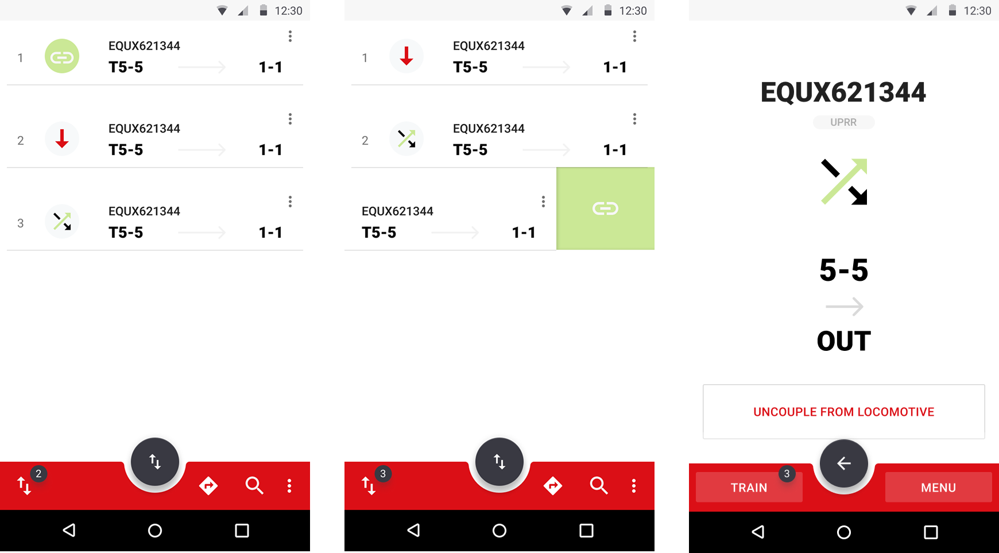

Katoen Natie: Railcar Management Automation System
Designed and implemented a comprehensive automation system that transformed manual, paper-based railcar operations into a fully digital workflow for petrochemical waste processing. Created a dual-platform solution with mobile apps for field personnel and desktop applications for managers, orchestrating the coordination of railcars, machinery, silos, and human resources across complex industrial operations for one of the world's leading logistics companies.
Role
Lead UX/UI Designer
Team
PM, 5 Engineers, 2 ML Specialist, Operation Specialists
Timeline
24 months
Tools
Figma, Excel, Material-design, Storybook.js
The Challenge
Katoen Natie, a global logistics leader operating across 36 countries with specialized expertise in petrochemical operations, was managing complex railcar operations through entirely manual, paper-based processes. Field personnel tracked railcar movements, machinery status, and silo operations using clipboards and radio communication, while managers relied on phone calls and paper reports to coordinate resources and scheduling.
This manual system created significant operational inefficiencies and safety risks in handling hazardous petrochemical materials. Critical information was lost in translation between shifts, equipment status was often outdated, and the lack of real-time visibility made it impossible to optimize operations or respond quickly to changing conditions. The paper-based approach also made compliance tracking and audit trails extremely difficult in an industry where documentation is crucial for safety and regulatory requirements.
The complexity of coordinating multiple railcars, various processing machinery, different silo capacities, and human resources across 24/7 operations demanded a sophisticated digital solution that could handle the industrial environment's harsh conditions while maintaining the reliability that safety-critical operations require.
Photo of railcars and locomotive at Katoen Natie's petrochemical facility.
Process & Research
We began with extensive field research, spending time at Katoen Natie's petrochemical facilities to understand the complex ecosystem of railcar operations. This immersive approach was crucial for grasping the nuanced workflows, safety protocols, and environmental constraints that would shape the digital solution.
- Field Observations: Shadowed operators, supervisors, and managers during different shifts to understand current workflows.
- Stakeholder Interviews: Conducted sessions with field personnel, managers, safety officers, and administrative staff.
- Process Mapping: Documented end-to-end workflows from railcar arrival to waste processing completion.
- Constraint Analysis: Identified technical and operational limitations of the industrial environment.
- Safety Protocol Review: Studied existing safety procedures to ensure digital solutions enhanced rather than compromised safety.
Photo of the team conducting field interviews to understand railcar operations.
Key Insights:
- Field personnel needed hands-free, weather-resistant interfaces for outdoor industrial environments.
- Managers required comprehensive oversight tools for resource allocation and scheduling optimization.
- Real-time status updates were critical for preventing bottlenecks and safety incidents.
- The system needed to work reliably in areas with poor connectivity.
- Integration with existing industrial equipment and sensors was essential for automation.
Photo of printed excel sheet with railcar and silo information, and a paper plan.
Photo of printed yard-overview with tracks and railcars information.
Ideation & Design
Based on field research insights, I designed a dual-platform ecosystem that addressed the distinct needs of field operations and management oversight. The solution centered on real-time coordination between mobile field applications and comprehensive desktop management tools.
Core Design Principles:
- Industrial-First Interface: Designed for gloved hands, outdoor visibility, and harsh environmental conditions.
- Safety-Centric Interactions: Every interface decision prioritized safety protocols and hazard awareness.
- Offline Resilience: Critical functions remained available during connectivity interruptions.
- Role-Based Access: Tailored interfaces for different operational roles and security levels.
- Scalable Architecture: Built to accommodate multiple facilities and varying operational scales.
Mobile App for Field Personnel:
- Large, high-contrast interface elements optimized for outdoor visibility.
- Simplified touch interactions for gloved operation.
- Real-time status updates for railcars, machinery, and silo levels.
- Integrated safety checklists and emergency protocols.
- Offline capability with automatic sync when connectivity returns.
Login and loading screens of the mobile app.
Current operations mobile app interface.
Operation instructions screen of the mobile app.
Tracks and railcars information screens of the mobile app.

Transfer Unit information screens.
Desktop App for Management:
- Comprehensive dashboard showing facility-wide operations status.
- Advanced scheduling and resource allocation tools.
- Detailed analytics and reporting for operational optimization.
- Integration with existing enterprise systems and compliance tracking.
- Multi-facility oversight capabilities for regional managers.
Scheduling interface showing railcar and machinery assignments over a timeline with railcar detail.
Scheduling interface showing railcar and machinery assignments.
Railyard interface showing railcars locations and status across the yard.
Railyard interface showing railcars locations and status across a single track with railcar details.
Testing & Iteration
The testing phase required unique approaches suited to industrial environments and safety-critical operations. Rather than traditional usability labs, we conducted extensive field testing during actual operations, with careful attention to safety protocols and minimal disruption to ongoing work.
Field Testing Approach:
- Pilot deployment with select operators during controlled conditions.
- Gradual rollout across different shifts to test 24/7 operational scenarios.
- Integration testing with existing machinery and sensor systems.
- Stress testing during peak operational periods.
- Safety scenario validation with emergency response teams.
Iterations focused heavily on interface robustness, data accuracy, and system reliability. We discovered that industrial environments demanded different interaction patterns than typical enterprise software, leading to innovative solutions for harsh-condition usability.
Photo of a field operator holding a paper plan with railcar and silo information.
Photo of a field operator using the mobile app to track railcars and machinery.
The iterative process also revealed the importance of continuous feedback loops with field personnel. Their insights were invaluable for refining workflows, enhancing safety features, and ensuring the system met real-world operational needs.
Dashboard interface for Transfer Units status and scheduling.

Schedule dashboard interface for TV's installed in awrehouses and silos, by zones.
Status dashboard interface for TV's installed in administrative zones.
The Solution & Impact
The implemented system transformed Katoen Natie's railcar operations from reactive, paper-based management to proactive, data-driven optimization. Field personnel gained real-time visibility into equipment status and automated coordination tools, while managers received comprehensive oversight capabilities that enabled strategic resource allocation and predictive maintenance scheduling.
Operational Improvements:
- Eliminated paper-based tracking and reduced data entry errors by 90%.
- Improved railcar turnaround times through automated scheduling and coordination.
- Enhanced safety compliance with integrated checklists and real-time hazard monitoring.
- Enabled predictive maintenance through continuous equipment monitoring.
- Provided audit trails and compliance documentation for regulatory requirements.
Key Features Delivered:
- Mobile Field App: Weather-resistant interface for tracking railcars, machinery, and silos with offline capabilities
- Desktop Management Platform: Comprehensive scheduling, analytics, and multi-facility oversight tools
- Real-Time Coordination: Automated communication between field operations and management systems
- Safety Integration: Built-in safety protocols, emergency procedures, and compliance tracking
- Industrial Connectivity: Reliable operation in challenging network conditions with robust data synchronization

Management interface of the mobile app showing tracks, railcar, product and silo information.
Login screen of the desktop application with custom illustration.
Management interface showing railcar and silo information.
Learnings & Next Steps
This project highlighted the unique challenges of designing for industrial environments where safety, reliability, and environmental constraints significantly impact user experience decisions. I learned that successful industrial software requires deep understanding of operational contexts that can't be replicated in traditional design environments.
The modular system architecture we established enables expansion to other Katoen Natie facilities and integration with emerging IoT sensors and automation technologies. Moving forward, the platform's foundation supports advanced analytics, predictive maintenance capabilities, and integration with broader supply chain management systems.
Future Opportunities:
- AI-powered optimization for railcar scheduling and resource allocation.
- Enhanced sensor integration for automated status updates.
- Expansion to other industrial logistics operations within Katoen Natie's portfolio.
- Integration with broader supply chain visibility platforms.
This project demonstrated that thoughtful digital transformation in industrial settings requires balancing technological capability with operational reality, safety requirements, and the human factors that make complex operations successful. The resulting platform not only automated existing processes but enabled new levels of operational intelligence and safety that weren't possible with manual systems.
Clevertech | 2018-2019